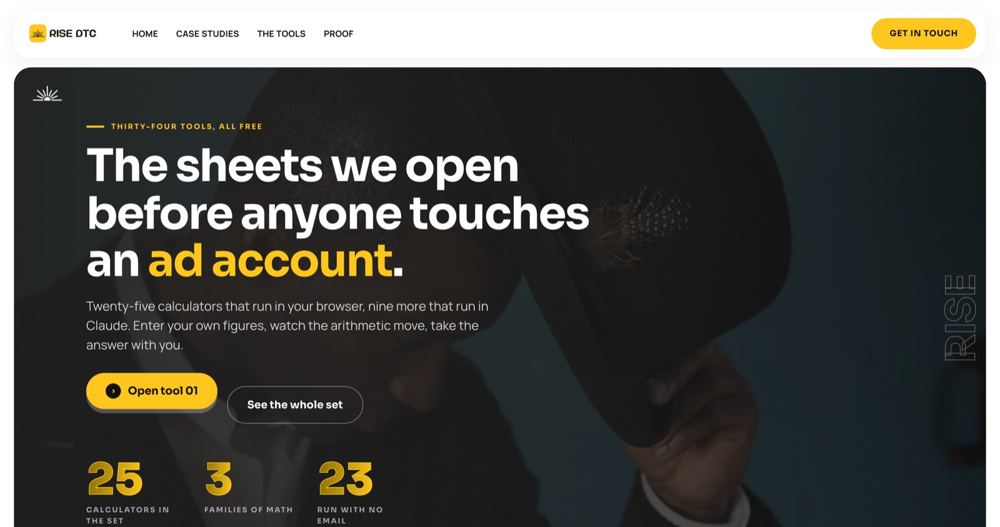
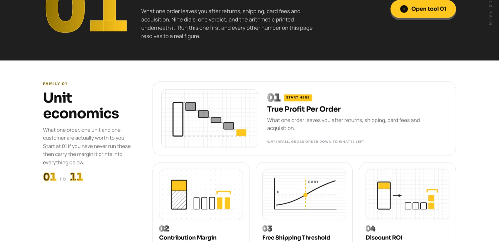
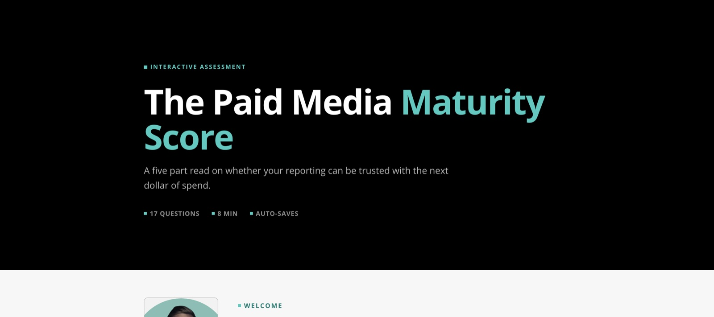
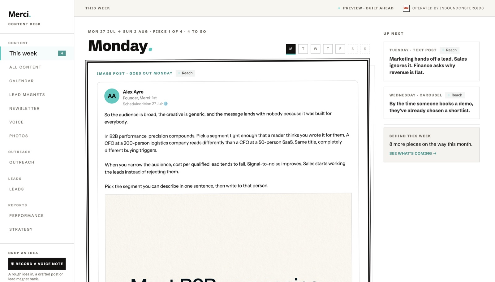
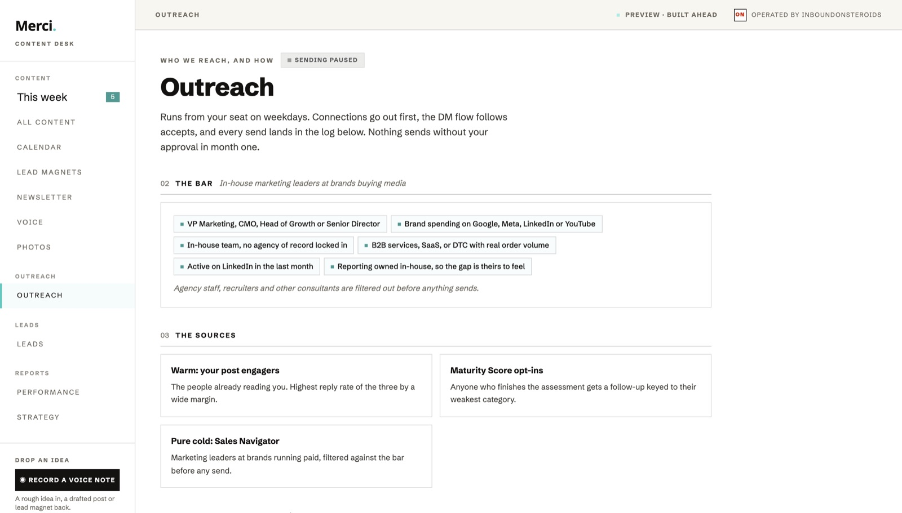
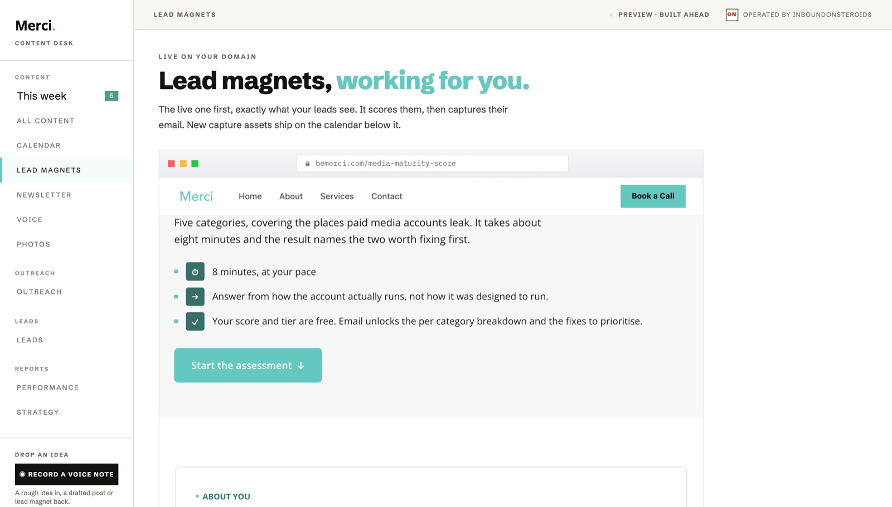

Your LinkedIn brand starts now.
I run it for you month to month, or I build it into your stack once and it’s yours.
Your situation, played back.
You’ve been building your personal brand since January, a couple posts a month, and Merci stays off your LinkedIn until January, so everything here runs agency-silent. Your audit came back with 4 buyers out of 108 readers and the rest mostly peers, which makes reach the first job. The brand has two doors for you: brands that read you and pull you in to consult, and the ones that want more hands, which opens the Merci conversation with your senior bench. And you want this hands-off: brand guidelines tight, voice tight, you approve who we reach out to, the rest handled. If I got any of this wrong, we fix it on the onboarding call.
I write, I build, I send, I answer. Every tool and infra cost runs on my side. Your time in it is about 30 minutes a month plus a shared Slack, and your agency stays out of the copy until January, exactly as we discussed.
The same system, built into your stack, and you own it: post writing and resource generation keep producing for you, and the outreach sending keeps firing on schedule. What sits with you after handover is the operating: reviewing and approving content, setting strategy, and running the DM conversations, two to three hours a week. Tool costs sit on your side. I stay the first month running it beside you on real sends, then hand over the keys.
One of us operates it. Pick which.
The line I drew on the call, in writing so nothing surprises you later. On run-for-you every row below is mine. On the build, production keeps running for you and the operating is yours, two to three hours a week.
| The work | Run for you | The build |
|---|---|---|
| Posts + resources, written and produceddaily content in your voice, resources your ICP shares | ||
| Strategywhat gets made, for whom, when to gate, where the reach goes next | ||
| Review + approval before anything posts | ||
| Outreach: sourcing, filtering, sendsconnections, DMs, InMails from your seat, under the ceilings | ||
| The conversations when someone replieson run-for-you I answer, and ping you on Slack only when something needs you | ||
| Tools + infra costs | ||
| Watching for breakagesources dry up and seats throttle, that is normal; the build ships with plain-English alerts | ||
| Your time in it | ~30 min / month | 2–3 hours / week |
Resources like this, under your name.
The free-tools play I showed you on the call, at full size. Below is a client’s live tools hub: 25 calculators, no email gate, built to get shared, and every share puts his name in front of buyers. Yours get built the same way, for people who hold a media budget. And your first one already exists: open it →



Your panel, already carrying your name.
The panel I walked you through, on your own demo board. This is where your 30 minutes a month happen: the week ahead visible, every piece reviewable before it goes out, and the outreach program with nothing hidden. Open it yourself, same link as the call.



The full list, so nothing rides on memory.
Built for where you are: ~500 connections, four buyers in the room per your audit, agency-silent until January. Job one is reach, then buyers.
- Content strategy planned for you · reach and following first, then aimed at the people who hold budget
- 4–5 posts a week in your voice · text, carousels, and video scripts when you want to start shooting
- Free ungated resources for your ICP · the growth lever at your stage, and every share travels your name
- Full LinkedIn audit + profile revamp, included · so the profile converts the visits the content creates
- Newsletter on a list you own, once there is an audience worth mailing
- Nurture on the people who engage · engagers worked toward the calendar, by name
- The panel: week view, calendar, every piece reviewable, KPIs, leads, performance, strategy · invite whoever you want into it
- Shared Slack, and about 30 minutes a month of your time
From your Sales Navigator seat, warm before cold, at volumes that keep the seat safe. This is the lane that books calls while inbound compounds.
- First booked calls in month one · compounding toward 6–12 a month combined as inbound catches up
- Warm outreach first: people engaging your posts, and your clients’ posts · the same move that got you and me talking
- ~400 connection requests a month, 100 a week, plus 50 InMails · run under LinkedIn’s ceiling on purpose
- Every prospect filtered against the bar before anything sends · agency staff and recruiters cut
- A personalized resource on every cold touch · the same scan that got your attention
- I run the replies end to end · you get a Slack ping only when something needs you
Where this goes from here.
If you go the build route instead: first thing that happens is scope and acceptance criteria in writing, so done means the same thing to both of us. Then the invoice, then the build, then a month of me running it beside you on real sends, then the keys. After that it is yours: your stack, your data, your audience, no monthly to me.